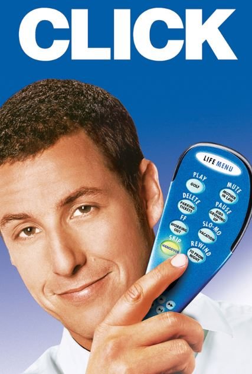

|  | Click
Direção: Frank Coraci
Elenco: Adam Sandler, Kate Beckinsale, Christopher Walken
Um arquiteto casado e com filhos está cada vez mais frustrado por passar a maior parte de seu tempo trabalhando. Um dia, ele encontra um inventor excêntrico que lhe dá um controle remoto universal, com capacidade de acelerar o tempo. No início, ele usa o aparelho para acelerar qualquer momento tedioso, mas se dá conta de que está acelerando o tempo demais e deixando de viver preciosos momentos em família. Desesperado, ele procura o inventor para ajudá-lo a reverter o que fez. |
|
Acesse mais em YouTube SESSÕES
|